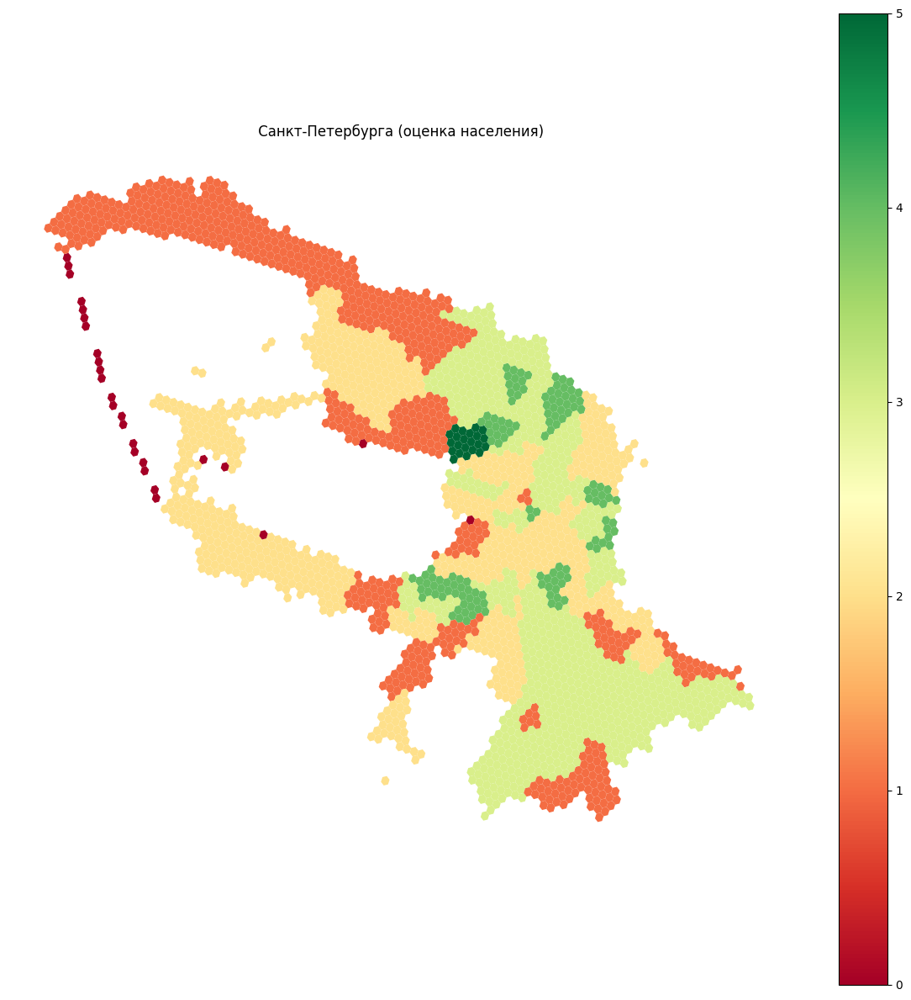
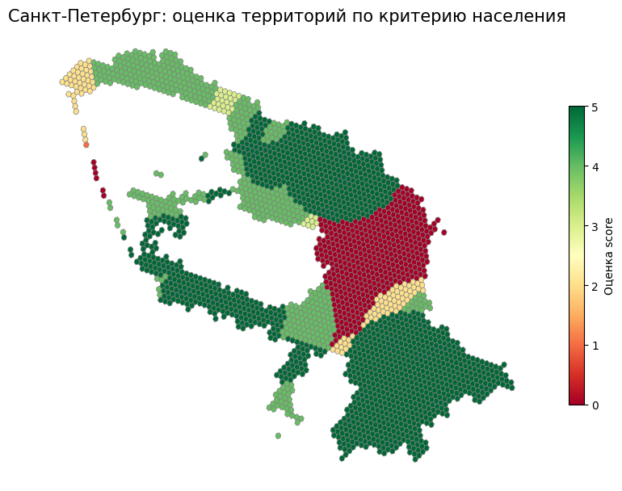
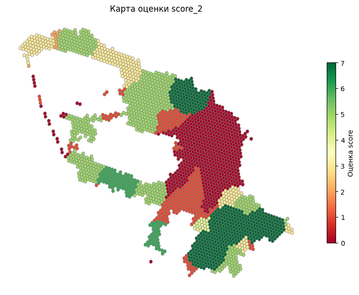

Оценка территории по критерию для гексагональной сетки
[ ]:
import warnings
import sys
import os
warnings.filterwarnings("ignore")
sys.stderr = open(os.devnull, 'w')
# local crs
local_crs = 32636
from popframe.models.region import Region
region_model = Region.from_pickle('data/__popframe_model_cache__/3138.pkl')
# grid = gpd.read_file('/Users/mvin/Code/PopFrame/examples/data/level_3.geojson', engine="pyogrio")
# grid
[2]:
import requests
import geopandas as gpd
def fetch_hexagons(
territory_id: int,
centers_only: bool = False,
base_url: str = 'https://urban-api.idu.kanootoko.org/api/v1/territory/{territory_id}/hexagons'
) -> gpd.GeoDataFrame:
"""
Запрос гексагонов для заданного territory_id и возвращает их в виде GeoDataFrame.
:param territory_id: ID территории
:param centers_only: если True — вернуть только центральные точки гексагонов
:param base_url: шаблон URL с {territory_id}
:return: GeoDataFrame с колонками geometry, hexagon_id и свойствами
"""
# Подставляем ID в URL
url = base_url.format(territory_id=territory_id)
params = {
'centers_only': centers_only
}
# Выполняем запрос
response = requests.get(url, params=params)
response.raise_for_status() # вызовет исключение, если код != 200
# Парсим GeoJSON
geojson = response.json()
features = geojson.get('features', [])
# Строим GeoDataFrame
# from_features автоматически извлечёт geometry и все свойства
gdf = gpd.GeoDataFrame.from_features(features)
# Устанавливаем CRS (WGS84)
gdf = gdf.set_crs(epsg=4326)
return gdf
territory_id = 3138 # ID территории для Санкт-Петербурга
gdf_hex = fetch_hexagons(territory_id, centers_only=False)
gdf_hex
[2]:
| geometry | hexagon_id | properties | |
|---|---|---|---|
| 0 | POLYGON ((30.06574 59.67090, 30.07379 59.67194... | 157558 | {} |
| 1 | POLYGON ((30.08770 60.08939, 30.09047 60.09382... | 157559 | {} |
| 2 | POLYGON ((30.37948 59.79270, 30.38759 59.79372... | 157560 | {} |
| 3 | POLYGON ((30.66727 59.76362, 30.66198 59.76704... | 157561 | {} |
| 4 | POLYGON ((30.24918 60.02467, 30.25198 60.02910... | 157562 | {} |
| ... | ... | ... | ... |
| 2529 | POLYGON ((30.45791 60.02272, 30.46608 60.02376... | 160087 | {} |
| 2530 | POLYGON ((30.23231 59.84322, 30.23764 59.83983... | 160088 | {} |
| 2531 | POLYGON ((29.50097 60.20315, 29.49286 60.20206... | 160089 | {} |
| 2532 | POLYGON ((30.74536 59.75700, 30.74007 59.76043... | 160090 | {} |
| 2533 | POLYGON ((30.17198 60.10435, 30.17477 60.10878... | 160091 | {} |
2534 rows × 3 columns
[3]:
import requests
import geopandas as gpd
def fetch_mo(
territory_id: int,
centers_only: bool = False,
base_url: str = 'https://urban-api.idu.kanootoko.org/api/v1/territory/indicator_values'
) -> gpd.GeoDataFrame:
"""
Запрос гексагонов для заданного territory_id и возвращает их в виде GeoDataFrame.
:param territory_id: ID территории
:param centers_only: если True — вернуть только центральные точки гексагонов
:param base_url: шаблон URL с {territory_id}
:return: GeoDataFrame с колонками geometry, hexagon_id и свойствами
"""
# Подставляем ID в URL
url = base_url.format(territory_id=territory_id)
params = {
'parent_id': territory_id, # ID родительской территории (1 для МО)
'indicator_ids' : 1
}
# Выполняем запрос
response = requests.get(url, params=params)
response.raise_for_status() # вызовет исключение, если код != 200
# Парсим GeoJSON
geojson = response.json()
features = geojson.get('features', [])
# Строим GeoDataFrame
# from_features автоматически извлечёт geometry и все свойства
gdf = gpd.GeoDataFrame.from_features(features)
# Устанавливаем CRS (WGS84)
gdf = gdf.set_crs(epsg=4326)
return gdf
territory_id = 3138 # ID территории для Санкт-Петербурга
gdf_mo = fetch_mo(territory_id, centers_only=False)
gdf_mo['population'] = gdf_mo['indicators'].apply(lambda lst: lst[0].get('value'))
gdf_mo
[3]:
| geometry | territory_id | name | indicators | population | |
|---|---|---|---|---|---|
| 0 | MULTIPOLYGON (((30.25023 59.90129, 30.25112 59... | 3153 | Адмиралтейский район | [{'name_full': 'Численность населения', 'measu... | 155981.0 |
| 1 | MULTIPOLYGON (((30.17787 59.94437, 30.17790 59... | 3145 | Василеостровский район | [{'name_full': 'Численность населения', 'measu... | 206680.0 |
| 2 | MULTIPOLYGON (((30.07078 60.09625, 30.07421 60... | 3144 | Выборгский район | [{'name_full': 'Численность населения', 'measu... | 541590.0 |
| 3 | MULTIPOLYGON (((30.34398 59.97727, 30.34399 59... | 3152 | Калининский район | [{'name_full': 'Численность населения', 'measu... | 536794.0 |
| 4 | MULTIPOLYGON (((30.16152 59.87428, 30.16152 59... | 3151 | Кировский район | [{'name_full': 'Численность населения', 'measu... | 335774.0 |
| 5 | MULTIPOLYGON (((30.43875 59.82757, 30.44219 59... | 3156 | Колпинский район | [{'name_full': 'Численность населения', 'measu... | 186169.0 |
| 6 | MULTIPOLYGON (((30.39428 59.92902, 30.39591 59... | 3150 | Красногвардейский район | [{'name_full': 'Численность населения', 'measu... | 366971.0 |
| 7 | MULTIPOLYGON (((30.03496 59.71785, 30.04047 59... | 3155 | Красносельский район | [{'name_full': 'Численность населения', 'measu... | 431546.0 |
| 8 | MULTIPOLYGON (((29.54157 60.04248, 29.54184 60... | 3141 | Кронштадтский район | [{'name_full': 'Численность населения', 'measu... | 44414.0 |
| 9 | MULTIPOLYGON (((29.42576 60.19074, 29.42719 60... | 3140 | Курортный район | [{'name_full': 'Численность населения', 'measu... | 83491.0 |
| 10 | MULTIPOLYGON (((30.19877 59.80161, 30.19888 59... | 3148 | Московский район | [{'name_full': 'Численность населения', 'measu... | 335221.0 |
| 11 | MULTIPOLYGON (((30.36331 59.91387, 30.36350 59... | 3146 | Невский район | [{'name_full': 'Численность населения', 'measu... | 547896.0 |
| 12 | MULTIPOLYGON (((30.21013 59.97234, 30.21024 59... | 3142 | Петроградский район | [{'name_full': 'Численность населения', 'measu... | 115757.0 |
| 13 | MULTIPOLYGON (((29.64754 59.92986, 29.64792 59... | 3147 | Петродворцовый район | [{'name_full': 'Численность населения', 'measu... | 134148.0 |
| 14 | MULTIPOLYGON (((29.95527 60.03782, 29.95528 60... | 3139 | Приморский район | [{'name_full': 'Численность населения', 'measu... | 699243.0 |
| 15 | MULTIPOLYGON (((30.21822 59.67307, 30.22257 59... | 3149 | Пушкинский район | [{'name_full': 'Численность населения', 'measu... | 263732.0 |
| 16 | MULTIPOLYGON (((30.33258 59.91305, 30.33284 59... | 3154 | Фрунзенский район | [{'name_full': 'Численность населения', 'measu... | 413983.0 |
| 17 | MULTIPOLYGON (((30.30827 59.94106, 30.30908 59... | 3143 | Центральный район | [{'name_full': 'Численность населения', 'measu... | 200654.0 |
[4]:
import pandas as pd
all_gdfs = []
# 2. Перебираем все territory_id из уже имеющегося gdf_mo:
for parent_tid in gdf_mo['territory_id']:
# вызываем вашу функцию fetch_mo для каждого района:
child_gdf = fetch_mo(parent_tid, centers_only=False)
# При желании можно сохранить «родительский» ID (т. е. ID района из gdf_mo),
# чтобы потом понимать, к какому району относится каждая запись:
child_gdf['parent_territory_id'] = parent_tid
# При необходимости можно добавить и название «родительского» района:
# например, найдём строку в gdf_mo с данным parent_tid и вытащим её name:
parent_name = gdf_mo.loc[gdf_mo['territory_id'] == parent_tid, 'name'].iloc[0]
child_gdf['parent_name'] = parent_name
# Добавляем полученный GeoDataFrame в список:
all_gdfs.append(child_gdf)
# 3. После цикла объединяем все GeoDataFrame в один:
# ignore_index=True — чтобы сбросить индексы и получить «плоскую» таблицу.
combined_gdf = pd.concat(all_gdfs, ignore_index=True)
combined_gdf['population'] = combined_gdf['indicators'].apply(lambda lst: lst[0].get('value'))
combined_gdf
[4]:
| geometry | territory_id | name | indicators | parent_territory_id | parent_name | population | |
|---|---|---|---|---|---|---|---|
| 0 | MULTIPOLYGON (((30.28180 59.93306, 30.28272 59... | 3249 | Адмиралтейский округ | [{'name_full': 'Численность населения', 'measu... | 3153 | Адмиралтейский район | 24189.0 |
| 1 | MULTIPOLYGON (((30.25023 59.90129, 30.25112 59... | 3252 | Екатерингофский округ | [{'name_full': 'Численность населения', 'measu... | 3153 | Адмиралтейский район | 21890.0 |
| 2 | MULTIPOLYGON (((30.29074 59.90313, 30.29090 59... | 3251 | округ Измайловское | [{'name_full': 'Численность населения', 'measu... | 3153 | Адмиралтейский район | 32807.0 |
| 3 | MULTIPOLYGON (((30.26049 59.91726, 30.26152 59... | 3253 | округ Коломна | [{'name_full': 'Численность населения', 'measu... | 3153 | Адмиралтейский район | 34026.0 |
| 4 | MULTIPOLYGON (((30.31777 59.92170, 30.31781 59... | 3250 | округ Семеновский | [{'name_full': 'Численность населения', 'measu... | 3153 | Адмиралтейский район | 22414.0 |
| ... | ... | ... | ... | ... | ... | ... | ... |
| 136 | MULTIPOLYGON (((30.30827 59.94106, 30.30908 59... | 3169 | Дворцовый округ | [{'name_full': 'Численность населения', 'measu... | 3143 | Центральный район | 7348.0 |
| 137 | MULTIPOLYGON (((30.33489 59.95015, 30.33642 59... | 3166 | Литейный округ | [{'name_full': 'Численность населения', 'measu... | 3143 | Центральный район | 40151.0 |
| 138 | MULTIPOLYGON (((30.31013 59.93647, 30.31023 59... | 3165 | округ № 78 | [{'name_full': 'Численность населения', 'measu... | 3143 | Центральный район | 9085.0 |
| 139 | MULTIPOLYGON (((30.35063 59.91524, 30.35178 59... | 3168 | округ Лиговка-Ямская | [{'name_full': 'Численность населения', 'measu... | 3143 | Центральный район | 19563.0 |
| 140 | MULTIPOLYGON (((30.35920 59.94408, 30.35920 59... | 3170 | округ Смольнинское | [{'name_full': 'Численность населения', 'measu... | 3143 | Центральный район | 74205.0 |
141 rows × 7 columns
[5]:
from popframe.method.city_evaluation import CityPopulationScorer
scorer = CityPopulationScorer(combined_gdf, gdf_hex)
output_list = scorer.run()
scores_df = pd.DataFrame(output_list)
gdf_hex['score'] = scores_df['score']
gdf_hex
[5]:
| geometry | hexagon_id | properties | score | |
|---|---|---|---|---|
| 0 | POLYGON ((30.06574 59.67090, 30.07379 59.67194... | 157558 | {} | 2.0 |
| 1 | POLYGON ((30.08770 60.08939, 30.09047 60.09382... | 157559 | {} | 1.0 |
| 2 | POLYGON ((30.37948 59.79270, 30.38759 59.79372... | 157560 | {} | 3.0 |
| 3 | POLYGON ((30.66727 59.76362, 30.66198 59.76704... | 157561 | {} | 3.0 |
| 4 | POLYGON ((30.24918 60.02467, 30.25198 60.02910... | 157562 | {} | 3.0 |
| ... | ... | ... | ... | ... |
| 2529 | POLYGON ((30.45791 60.02272, 30.46608 60.02376... | 160087 | {} | 2.0 |
| 2530 | POLYGON ((30.23231 59.84322, 30.23764 59.83983... | 160088 | {} | 4.0 |
| 2531 | POLYGON ((29.50097 60.20315, 29.49286 60.20206... | 160089 | {} | 1.0 |
| 2532 | POLYGON ((30.74536 59.75700, 30.74007 59.76043... | 160090 | {} | 3.0 |
| 2533 | POLYGON ((30.17198 60.10435, 30.17477 60.10878... | 160091 | {} | 1.0 |
2534 rows × 4 columns
[6]:
scores_df
[6]:
| hexagon_id | project | average_population_density | total_population | score | interpretation | |
|---|---|---|---|---|---|---|
| 0 | 157558 | None | 774.7 | 58652.0 | 2.0 | Территория отличается относительно низкой числ... |
| 1 | 157559 | None | 43.9 | 6021.0 | 1.0 | Территория имеет низкиие показателяи численнос... |
| 2 | 157560 | None | 318.5 | 132978.0 | 3.0 | Территория имеет средние показатели численност... |
| 3 | 157561 | None | 631.2 | 143914.0 | 3.0 | Территория имеет средние показатели численност... |
| 4 | 157562 | None | 2387.6 | 114257.0 | 3.0 | Территория имеет средние показатели численност... |
| ... | ... | ... | ... | ... | ... | ... |
| 2529 | 160087 | None | 904.0 | 75180.0 | 2.0 | Территория отличается относительно низкой числ... |
| 2530 | 160088 | None | 4223.5 | 71589.0 | 4.0 | Территория имеет высокие показатели численност... |
| 2531 | 160089 | None | 33.4 | 1668.0 | 1.0 | Территория имеет низкиие показателяи численнос... |
| 2532 | 160090 | None | 631.2 | 143914.0 | 3.0 | Территория имеет средние показатели численност... |
| 2533 | 160091 | None | 43.9 | 6021.0 | 1.0 | Территория имеет низкиие показателяи численнос... |
2534 rows × 6 columns
[7]:
import matplotlib.pyplot as plt
gdf_hex.plot(
column='score',
legend=True,
figsize=(15,15),
cmap='RdYlGn'
).set_axis_off()
plt.title(' Санкт-Петербурга (оценка населения)')
plt.show()

Население
[ ]:
from popframe.method.territory_evaluation import TerritoryEvaluation
evaluation = TerritoryEvaluation(region=region_model)
results = evaluation.population_criterion(territories_gdf=gdf_hex)
scores_df = pd.DataFrame(results)
scores_df
[ ]:
gdf_hex['score'] = scores_df['score']
gdf_hex
| geometry | hexagon_id | properties | score | |
|---|---|---|---|---|
| 0 | POLYGON ((30.06574 59.6709, 30.07379 59.67194,... | 157558 | {} | 4.0 |
| 1 | POLYGON ((30.0877 60.08939, 30.09047 60.09382,... | 157559 | {} | 5.0 |
| 2 | POLYGON ((30.37948 59.7927, 30.38759 59.79372,... | 157560 | {} | 5.0 |
| 3 | POLYGON ((30.66727 59.76362, 30.66198 59.76704... | 157561 | {} | 5.0 |
| 4 | POLYGON ((30.24918 60.02467, 30.25198 60.0291,... | 157562 | {} | 5.0 |
| ... | ... | ... | ... | ... |
| 2529 | POLYGON ((30.45791 60.02272, 30.46608 60.02376... | 160087 | {} | 0.0 |
| 2530 | POLYGON ((30.23231 59.84322, 30.23764 59.83983... | 160088 | {} | 0.0 |
| 2531 | POLYGON ((29.50097 60.20315, 29.49286 60.20206... | 160089 | {} | 2.0 |
| 2532 | POLYGON ((30.74536 59.757, 30.74007 59.76043, ... | 160090 | {} | 5.0 |
| 2533 | POLYGON ((30.17198 60.10435, 30.17477 60.10878... | 160091 | {} | 5.0 |
2534 rows × 4 columns
[ ]:
import matplotlib.pyplot as plt
# допустим, ваш GeoDataFrame называется gdf и в нём есть колонки 'geometry' и 'score'
fig, ax = plt.subplots(1, 1, figsize=(10, 8))
gdf_hex.plot(
column='score', # раскраска по score
cmap='RdYlGn', # палитра от Red → Yellow → Green
linewidth=0.5, # толщина границ
edgecolor='grey', # цвет границ
legend=True, # вывод легенды
legend_kwds={
'label': "Оценка score",
'shrink': 0.6
},
ax=ax
)
ax.set_title("Санкт-Петербург: оценка территорий по критерию населения", fontsize=15)
ax.set_axis_off() # убираем оси
plt.show()

[ ]:
[ ]:
# grid.to_file("grid_population_score.geojson", driver="GeoJSON")
[ ]:
from popframe.method.territory_evaluation import TerritoryEvaluation
evaluation = TerritoryEvaluation(region=region_model)
results = evaluation.evaluate_territory_location(territories_gdf=gdf_hex)
scores_df = pd.DataFrame(results)
scores_df
| territory | score | interpretation | closest_settlement | closest_settlement1 | closest_settlement2 | |
|---|---|---|---|---|---|---|
| 0 | None | 0 | Территория находится за границей агломерации | None | None | None |
| 1 | None | 5 | Территория находится внутри или непосредственн... | поселок Левашово | None | None |
| 2 | None | 7 | Территория находится внутри или непосредственн... | поселок Шушары | None | None |
| 3 | None | 7 | Территория находится внутри или непосредственн... | город Колпино | None | None |
| 4 | None | 1 | Территория находится между основными ядрами си... | None | поселок Парголово | поселок Лисий Нос |
| ... | ... | ... | ... | ... | ... | ... |
| 2529 | None | 0 | Территория находится за границей агломерации | None | None | None |
| 2530 | None | 1 | Территория находится между основными ядрами си... | None | поселок Стрельна | поселок Александровская |
| 2531 | None | 3 | Территория находится внутри или непосредственн... | поселок Молодежное | None | None |
| 2532 | None | 3 | Территория находится внутри или непосредственн... | поселок Саперный | None | None |
| 2533 | None | 5 | Территория находится внутри или непосредственн... | поселок Левашово | None | None |
2534 rows × 6 columns
[ ]:
gdf_hex['score_2'] = scores_df['score']
gdf_hex
| geometry | hexagon_id | properties | score | score_2 | |
|---|---|---|---|---|---|
| 0 | POLYGON ((30.06574 59.6709, 30.07379 59.67194,... | 157558 | {} | 4.0 | 0 |
| 1 | POLYGON ((30.0877 60.08939, 30.09047 60.09382,... | 157559 | {} | 5.0 | 5 |
| 2 | POLYGON ((30.37948 59.7927, 30.38759 59.79372,... | 157560 | {} | 5.0 | 7 |
| 3 | POLYGON ((30.66727 59.76362, 30.66198 59.76704... | 157561 | {} | 5.0 | 7 |
| 4 | POLYGON ((30.24918 60.02467, 30.25198 60.0291,... | 157562 | {} | 5.0 | 1 |
| ... | ... | ... | ... | ... | ... |
| 2529 | POLYGON ((30.45791 60.02272, 30.46608 60.02376... | 160087 | {} | 0.0 | 0 |
| 2530 | POLYGON ((30.23231 59.84322, 30.23764 59.83983... | 160088 | {} | 0.0 | 1 |
| 2531 | POLYGON ((29.50097 60.20315, 29.49286 60.20206... | 160089 | {} | 2.0 | 3 |
| 2532 | POLYGON ((30.74536 59.757, 30.74007 59.76043, ... | 160090 | {} | 5.0 | 3 |
| 2533 | POLYGON ((30.17198 60.10435, 30.17477 60.10878... | 160091 | {} | 5.0 | 5 |
2534 rows × 5 columns
[ ]:
import geopandas as gpd
import matplotlib.pyplot as plt
# допустим, ваш GeoDataFrame называется gdf и в нём есть колонки 'geometry' и 'score'
fig, ax = plt.subplots(1, 1, figsize=(10, 8))
gdf_hex.plot(
column='score_2', # раскраска по score
cmap='RdYlGn', # палитра от Red → Yellow → Green
linewidth=0.5, # толщина границ
edgecolor='grey', # цвет границ
legend=True, # вывод легенды
legend_kwds={
'label': "Оценка score",
'shrink': 0.6
},
ax=ax
)
ax.set_title("Карта оценки score_2")
ax.set_axis_off() # убираем оси
plt.show()
